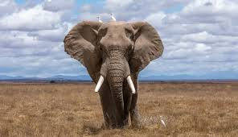

Elefante
Inicio
Los elefantes
Aprende mas sobre ellos

Diferencia entre elfantes africános y asiáticos
Existen más de 10 características físicas que diferencian a los elefantes asiáticos de los africanos. Por ejemplo, los elefantes asiáticos son más pequeños que los africanos y sus orejas son rectas en la parte inferior, a comparación de las grandes orejas en forma de abanico de las especies africanas. Solo algunos elefantes machos asiáticos tienen colmillos, mientras que los elefantes africanos, tanto machos como hembras, tienen colmillos. También, es importante señalar que existen dos especies de elefantes en el continente africano: el elefante de la sabana y el elefante del bosque, con una serie de características que los hacen distintos. El elefante africano del bosque está catalogado como En Peligro Crítico y el elefante de la sabana africana como En Peligro. Esto es importante ya que enfrentan diferentes desafíos de conservación y ocurren en áreas de distribución y hábitats distintos en toda África. Los elefantes de los bosques africanos habitan la densa selva tropical de África occidental y central, mientras que los elefantes de la sabana africana habitan principalmente en las sabanas boscosas y los pastizales del África subsahariana. También difieren físicamente. Los elefantes de la sabana africana son más grandes y sus colmillos se curvan hacia afuera. El elefante africano del bosque es más pequeño, sus colmillos son más rectos y apuntan hacia abajo y tienen orejas más redondeadas.
Dime que opinas de mi página en:
Inicio